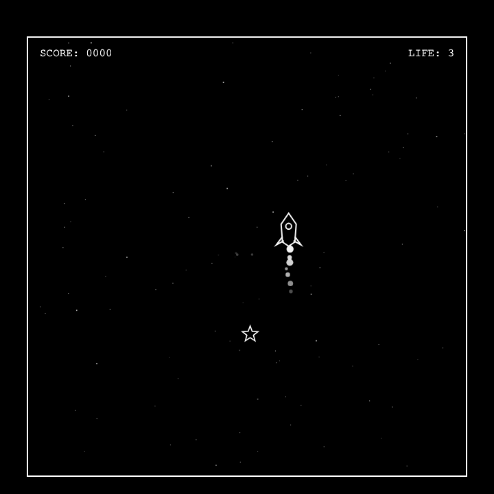

검은 우주 보드 안에서 빨라지는 로켓으로 별을 먹고, 장애물을 피하며 오래 살아남는 흑백 고속 생존 미니게임.

실제 게임 플레이 화면: 로켓, 별, 우주 쓰레기, HUD가 모두 보드 안에서만 표시된다.
9999: Rocket Escape는 정사각형 우주 보드 안에서 로켓을 조종해 별을 먹고 장애물을 피하는 Canvas 미니게임이다. Snake처럼 보드 밖으로 나갈 수 없고, 점수가 오를수록 로켓과 장애물이 함께 빨라진다.
| 요소 | 규칙 |
|---|---|
| 별 | 항상 1개만 생성된다. 먹으면 기본 점수와 콤보 보너스를 받고 새 위치에 다시 생성된다. |
| 점수 | 별 획득 점수, 생존 시간 점수, 콤보 보너스를 합산한다. |
| 로켓 | 방향키 또는 WASD로 움직인다. 보드 밖으로 나갈 수 없다. |
| 목숨 | 최대 3개다. 벽, 우주 쓰레기, 소행성 충돌 시 1 감소한다. |
| 별똥별 | 일반 별똥별에 맞으면 목숨 -0.5, 반짝이는 별똥별을 먹으면 목숨 +1이다. |
| 종료 | 목숨이 0이면 Game Over, 9999점에 도달하면 END 화면을 보여주고 로컬 랭킹에 등록한다. |
초반부터 등장하는 기본 장애물이다. 보드 바깥에서 생성되어 직선으로 이동하며, 점수가 높아질수록 더 빠르고 자주 등장한다. 70점 이후에는 최대 2개, 150점 이후에는 최대 3개까지 한 번에 등장한다.
100점 이상부터 등장한다. 우주 쓰레기보다 크고 빠르며, 고득점 구간에서 가장 큰 위협이 된다. 다만 플레이어를 직접 겨냥하는 불합리한 생성은 피하도록 방향을 조절한다.
보드 모서리에서 반대쪽 모서리까지 대각선으로 지나간다. 일반 별똥별은 가장 빠른 장애물보다 더 빠르게 움직이고, 회복 별똥별은 더 드물게 등장해 위험을 감수할 보상을 만든다.
전체 화면은 흑백만 사용한다. 검은 보드는 우주 공간을, 흰색 도형은 로켓, 별, 장애물, UI 정보를 표현한다. 외부 이미지 없이 Canvas 도형과 파티클만 사용해 레트로한 인상을 유지한다.
프로젝트는 게임 루프, 오브젝트, 이펙트, UI를 역할별로 나누어 관리한다. 불필요한 파일을 제거하고 이 게임 실행에 필요한 구조만 남겼다.
src/
main.ts
game/
core/ Game, Input, Collision, Difficulty, types
objects/ Player, Star, Obstacle, Asteroid
effects/ Background, Particle
ui/ Menu, HUD, screens
styles/ global.css
현재 버전은 START 중심의 단순한 진입 흐름과 로컬 랭킹으로 구성되어 있다. 다음 단계에서는 플레이 지속성과 완성도를 높이는 기능을 보완할 수 있다.